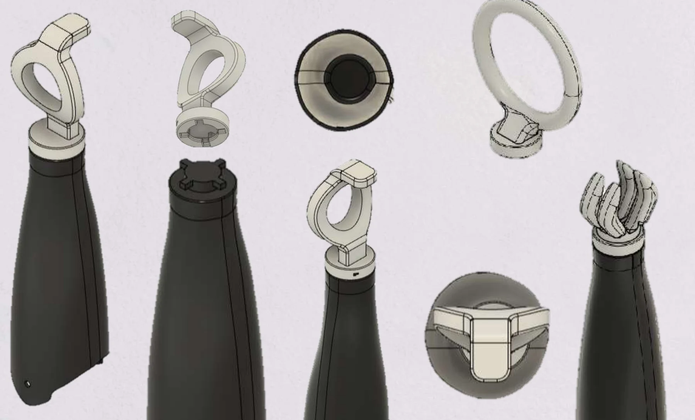
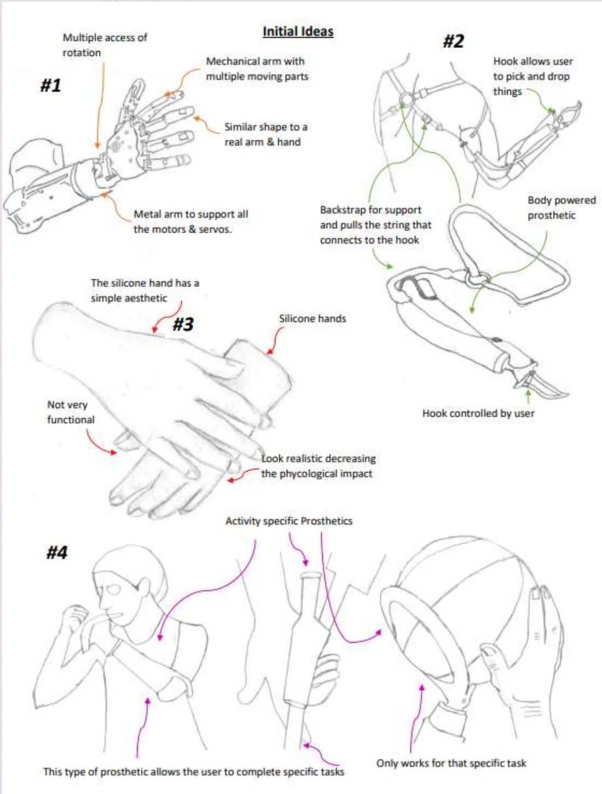
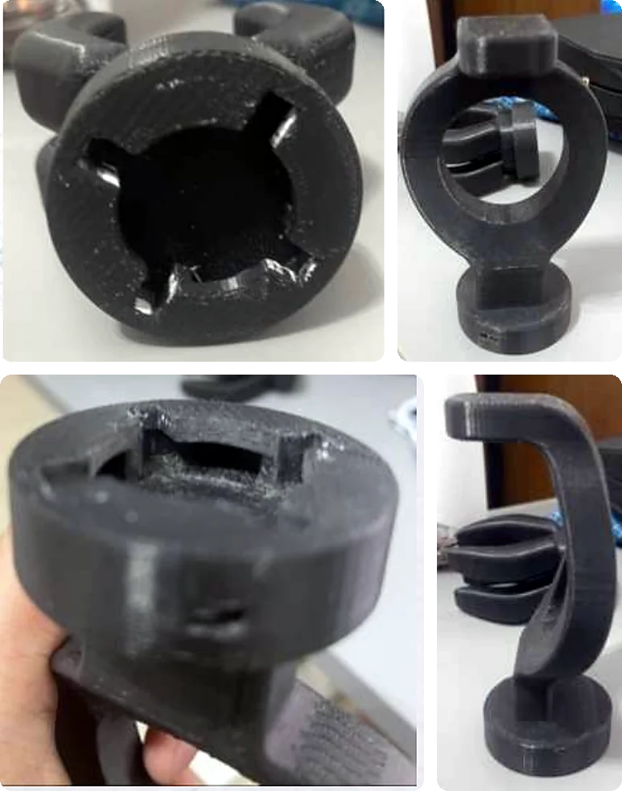
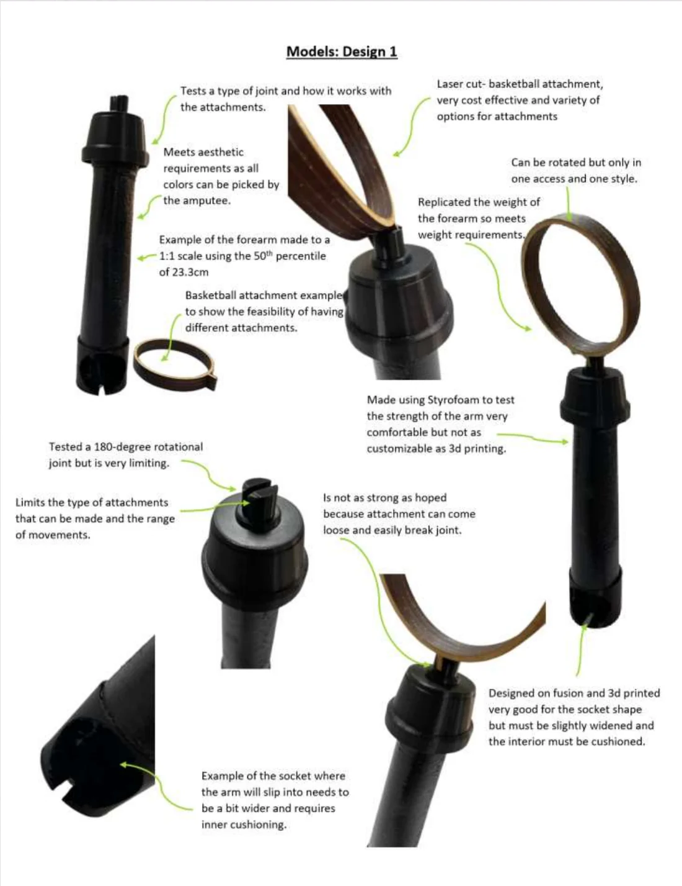
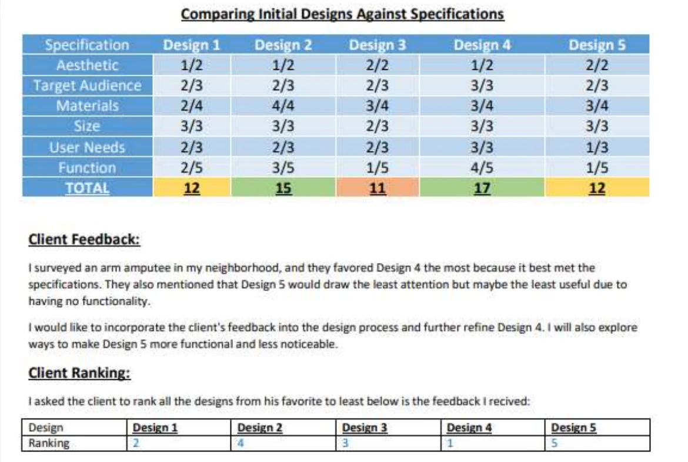

Part 1
Forearm socket
23.3 cm long, the 50th-percentile forearm length.
P3 · 3D-printed · not yet worn
A low-cost, 3D-printed forearm for arm amputees. One socket takes a claw, a gripper or a ring. Swap the attachment below, or open The lock to watch it twist on.
Loading the 3D model
Follow the wire for the build
01 · The parts
The wearer swaps attachments without help. These are the original CAD renders; the model above is rebuilt from photos of the print.
Part 1
23.3 cm long, the 50th-percentile forearm length.
Part 2
Four lugs on the socket. The attachment turns onto them.
Part 3
Pushes in once the attachment is seated, so it cannot turn back.
Part 4
One of three attachments, each shaped for one task.
Part 5
Swaps onto the same four lugs as the claw.
Part 6
The attachment shown locked on in the model above.

02 · Choosing the design
An arm amputee ranked the same design first, and noted that the most natural-looking hand was the least useful.

My part
I took this from five sketches to a printed forearm: interviewed an amputee, scored the concepts, tested the joints that failed and designed the lock. No one has worn it yet.
03 · What went wrong
It turned on one axis only, and attachments could work loose and break it.
Turn the attachment onto the lugs, push in the key, and it stays put.
Modelled a separate insert to line and pad it.

04 · Test prints
Early prints tried the joint, the socket fit and a laser-cut ring before the final design.

